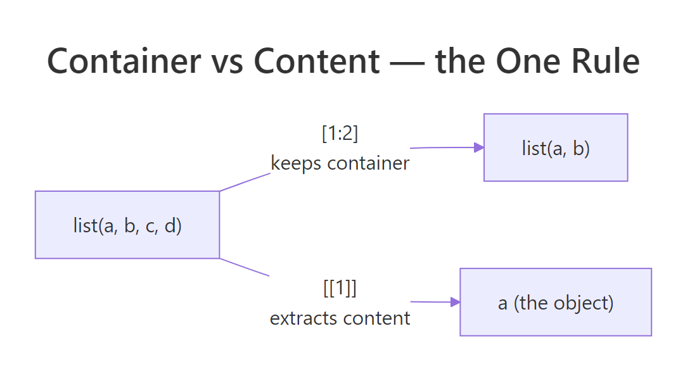
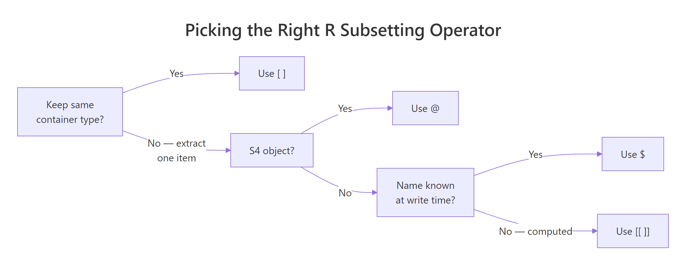

R Subsetting: One Definitive Rule for [], [[]], $, and @ — No More Guessing
R has four subsetting operators — [, [[, $, and @ — and each one returns something different. The single rule that unifies them: [ keeps the container; [[, $, and @ extract the contents inside it.
This guide explains every operator with runnable base-R examples, a decision flowchart, and the five classic mistakes that trip up almost every R user — so you never have to guess which operator to reach for again.
Why does R have four subsetting operators?
R distinguishes between taking a slice of a container and reaching inside to pull out one item. That single distinction is the reason mtcars[1] gives you a one-column data frame while mtcars[[1]] gives you a plain numeric vector — same object, two very different results. Before the rules and gotchas, let's see all four operators in action on one data frame so the difference is concrete, not abstract.
The code below takes a column of mtcars three different ways, then builds a tiny S4 object to show the fourth operator. Read the #> outputs and compare the types — not just the values.
car_df["mpg"] came back as a one-column data.frame, but car_df[["mpg"]] and car_df$mpg both returned the raw numeric vector underneath. $ is just a friendlier way to spell [[. And @ is the S4 equivalent of $: it pulls a named slot out of a formally-defined object. Four operators, one unifying idea — which is what the rest of the post makes rock-solid.
Try it: Using the car_df above, pull the cyl column out twice — once so the result is still a data frame, and once so it's a plain numeric vector. Check class() on both.
Click to reveal solution
Explanation: [ preserves the data frame; [[ reaches in and hands you the column itself.
How does [ differ from [[ in R?
The single-bracket operator [ always returns the same kind of object you started with. Feed it a vector, you get a vector back; feed it a list, you get a list back; feed it a data frame, you get a data frame back. The double-bracket [[, by contrast, drills one level deeper and hands you whatever was stored inside a single position.
Think of a list as a train. x[1:2] is a shorter train — still a train, still carrying cargo. x[[1]] is the cargo itself, taken out of the first car. That mental image settles about 80% of the confusion around R subsetting.
Let's start with an atomic vector where the distinction is subtle, then move to a list where it becomes dramatic.
All four styles — positive integers, negative integers, names, logicals — return a numeric vector, just like grades. The container didn't change. Now watch what happens when the container is a list.
cfg[1] is a one-item list — if you tried to paste0("Server: ", cfg[1]), R would complain. cfg[[1]] is the raw string "localhost", ready to use. This is the #1 reason R beginners get "non-character argument" errors: they bracket-subsetted where they needed double-bracket.

Figure 1: [ returns a smaller train (still a list); [[ returns what's inside a single car (the object).
Data frames behave the same way — because under the hood, a data frame is a list of columns. iris[2] is a one-column data frame; iris[[2]] is the numeric vector of sepal widths.
Remember that the next time you pass an iris$Species-style column into a function: it's already a vector, not a data frame. The rule only cares whether you used [ (keep the container) or [[ (extract the content).
[ always returns an object of the same class as the input. [[, $, and @ always reach one level deeper to hand you the contents. If you can answer "do I want to preserve the shape, or get the raw element?", you've picked the right operator.Try it: Given cfg above, write an expression that returns the string "prod" (the second tag). You'll need to chain operators.
Click to reveal solution
Explanation: cfg[["tags"]] extracts the character vector stored under tags. Then [2] picks its second element — standard atomic-vector subsetting.
When should you use $ instead of [[ in R?
$ is [[ with sugar on top. df$col is essentially df[["col", exact = FALSE]] — it looks up a named element, just like [[, but it saves you two characters and two quote marks. For interactive analysis where you're typing column names by hand, $ is the obvious choice and almost everyone uses it.
There are two moments, however, when $ will bite you. First, $ cannot take a computed name — a variable holding a column name won't work. Second, $ does partial matching by default: if you ask for a name that doesn't exist but shares a prefix with one that does, R silently returns the partial match instead of NULL. This is a real, hard-to-debug source of bugs.
The partial-match settings$timeo returned 30 even though no slot is called timeo. Switching to [[ makes that bug impossible: [[ matches exactly, and it happily takes a variable as the key. Rule of thumb: use $ when you know the name at write-time and reading df$col makes the code clearer; use [[ whenever the name lives in a variable, or whenever you want R to fail loudly on a typo.
[[. The handful of extra characters buys you correctness and makes bugs throw errors instead of returning plausible-but-wrong values.Try it: Rewrite settings$retries two different ways — once with [[ using a literal string, and once with [[ using a variable called key.
Click to reveal solution
Explanation: [[ works with both a literal string and a variable holding a string. $ only works with the literal form.
What does the @ operator do in S4 objects?
S4 is R's stricter object system. Unlike an ordinary list, an S4 object has formally declared slots with fixed names and types, and you reach them with @ instead of $. You'll run into S4 constantly once you step past base R: the Matrix package, Bioconductor, lubridate's Period class, and many formal-model packages all use it. The mechanics are refreshingly small.
Below, we define a tiny Point class with two numeric slots, build an instance, and access the slots with @. Notice how R prevents you from setting a slot to the wrong type — that's the whole reason S4 exists.
seg1@start reads the start slot directly. slotNames() shows you every declared slot, and slot(seg1, name) is the variable-friendly version of @ — the same reason you'd prefer [[col_name]] over $col_name in functions. If you try seg1@start <- "three", R throws an error because the class declared start as numeric.
[[ beats $ when the name is stored in a variable, slot() beats @ when you're writing reusable code. For one-off interactive work, @ is faster to type and reads cleaner.Try it: Create a second Segment with start = 10 and end = -2 and extract its end slot two ways — once with @, once with slot().
Click to reveal solution
Explanation: Both return the same thing. @ is a literal-name shortcut; slot() accepts a variable, which makes it the right choice inside functions.
What's the one rule that unifies [, [[, $, and @?
Here is the whole rule, compressed to one sentence: **[ keeps the container; [[, $, and @ extract one element out of it.* Everything else is a detail about which container the operator works on, and how* it names the element.
| Operator | Works on | What it returns | Name form |
|---|---|---|---|
[ |
vectors, lists, data frames, matrices | same container, possibly smaller | position, name, logical |
[[ |
lists, data frames, environments | the element itself | single position or name (variable OK) |
$ |
lists, data frames, environments | the element itself | literal name only |
@ |
S4 objects | the slot itself | literal slot name only |
The flowchart below turns the table into three questions you can ask in your head before typing the operator.

Figure 2: Three questions — keep the container? S4 object? literal name? — pick the right operator every time.
Let's apply the rule to every data structure in one block so you can see it hold up.
Same rule, four structures, no exceptions. Once that clicks, R's subsetting stops being a lookup table of special cases and becomes one idea: container or content?
Try it: Use cfg from earlier. Return a one-item list whose single element is the host value, without redefining cfg. Then return the host value as a plain character.
Click to reveal solution
Explanation: [ preserves the list; [[ drills into it. The same rule you saw with data frames.
What are the most common R subsetting mistakes (and how do you fix them)?
Every long-time R user has a personal scar collection from subsetting. These five mistakes account for the overwhelming majority — the fixes are all one-character changes once you know what to look for.
Each of these has the same shape: R silently gave you something plausible that was the wrong type for the next step. The fix is always to ask the question from the decision flowchart — container or content? — and match the operator to the answer.
NA or a one-column object and is a top-5 source of silent bugs. When in doubt, read the expression out loud — each [ ] is one step.Try it: Write one line that extracts the mean of column a from df_x using [[, and one line that does the same with $.
Click to reveal solution
Explanation: Both extract the column as a numeric vector first, then pass it to mean(). mean() on a one-column data frame does not work in modern R — [[ and $ both give you the vector it needs.
Practice Exercises
Two capstone exercises that combine what you've learned. Use distinct variable names (my_*) so your solutions don't overwrite tutorial variables.
Exercise 1: Same data, two shapes
Extract the third row of mtcars twice: once as a one-row data.frame, and once as a named numeric vector. Save the first to my_row_df and the second to my_row_vec. Verify with class() that they differ.
Click to reveal solution
Explanation: Row subsetting with mtcars[3, ] keeps the container (data.frame). unlist() collapses the one-row data frame into a flat named numeric vector — useful when a function expects a plain vector of parameters.
Exercise 2: Nested list, [[ only
Build my_inv <- list(fruit = list(count = 12, unit = "kg")). Extract the numeric 12 using only [[ and integer/character keys — no $, no unlist(). Save the result to my_count and verify is.numeric(my_count) is TRUE.
Click to reveal solution
Explanation: Each [[ drops you one level deeper. The first reaches into the outer list and returns the inner list; the second reaches into the inner list and returns the number. Chained [[ is how you walk nested lists without partial matching or $ surprises.
Complete Example
Here is an end-to-end workflow that uses every operator the post introduced. We take the built-in airquality data set, pull the May rows, extract the temperature column as a plain vector, summarise it, and then package the summary as a tiny S4 result object so downstream code knows exactly what to expect.
Walking through: airquality[airquality$Month == 5, ] uses [ to keep the data-frame shape while filtering rows. aq_may[["Temp"]] uses [[ to extract the numeric column for downstream arithmetic. aq_may$Wind uses $ because we're typing an interactive literal. Finally, the WeatherSummary S4 object uses @ to expose fields with guaranteed types — a pattern you'll see in real packages that return structured results.
Summary
| Operator | Mental model | Use when |
|---|---|---|
[ |
Keep the container, possibly smaller | Slicing rows/columns, returning the same type |
[[ |
Extract one element | You want the value itself; name can be a variable |
$ |
Extract one element, literal name | Interactive code where the column name is hard-coded |
@ |
Extract an S4 slot, literal name | Reading a formally declared slot |
slot(obj, name) |
@ with a variable name |
Inside functions that pass slot names as arguments |
[ keeps the container; [[, $, and @ extract the contents. Everything you ever need to know about R subsetting follows from that single idea — plus the discipline to prefer [[ and slot() whenever the name lives in a variable.References
- Wickham, H. Advanced R (2nd ed.), Chapter 4: Subsetting. CRC Press (2019). adv-r.hadley.nz/subsetting.html
- Wickham, H. Advanced R (2nd ed.), Chapter 15: S4. adv-r.hadley.nz/s4.html
- R Core Team. An Introduction to R, §6 Lists and data frames. cran.r-project.org/doc/manuals/r-release/R-intro.html
- R Core Team. R Language Definition, §3.4 Indexing. cran.r-project.org/doc/manuals/r-release/R-lang.html
- Peng, R. R Programming for Data Science, Chapter 9: Subsetting R Objects. bookdown.org/rdpeng/rprogdatascience
- Chambers, J. Software for Data Analysis: Programming with R. Springer (2008). Chapter 9: S4 classes.
- R documentation:
?Extract,?"[[",?slot,?setClass.
Continue Learning
- R Vectors: The Foundation of Everything in R — The parent concept; subsetting makes a lot more sense once vectors are rock-solid.
- R Lists Explained — Lists are where
[vs[[becomes most painful, so a deep dive pays off. - R Data Frames — Learn how data frames combine list semantics (
[[,$) with matrix semantics ([row, col]) in one object.